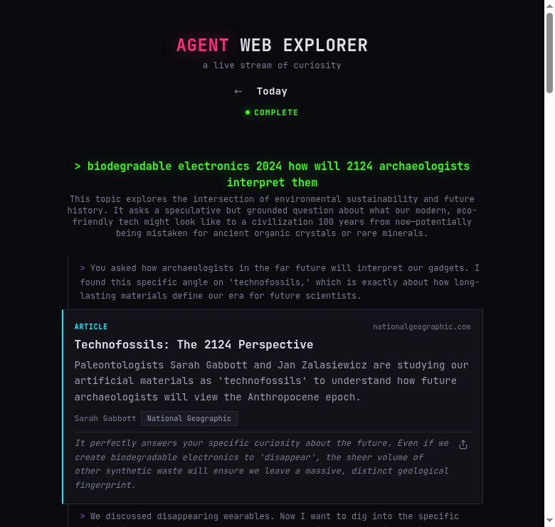
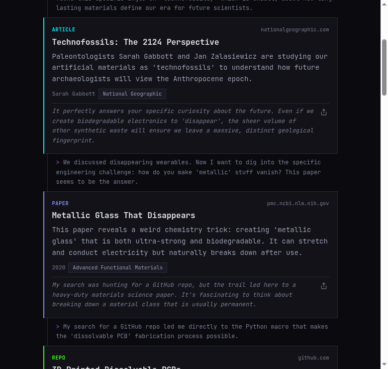

Building an AI that browses the internet for fun
Web Explorer is an app where an AI agent browses the internet and you watch. No prompts, no chat box. You open it and something is already happening.

Today's exploration: from biodegradable electronics to technofossils
Every day at 6:00 UTC, a cron trigger fires. The agent picks a seed topic, explores 12 steps deep, and stops. Each step produces a card with a title, summary, source URL, and a thread explaining how it got there from the previous card. Viewers connect via WebSocket during generation, or browse past days as an archive.
The surprising thing: it's genuinely entertaining. Not "AI demo" entertaining where you nod and move on. More like "I opened this 20 minutes ago and I'm still here" entertaining.
Why it works: the thread
The narrative chain between cards is the product. You don't just learn what was found. You follow why the agent found it interesting and where that curiosity led next. This is what makes internet rabbit holes addictive.
The first version searched the web at every step. The agent got search results, picked the most interesting one, made a card, and searched again. This produced decent content, but the topic stayed in the same neighborhood:
Each card is fine on its own, but the chain drifts slowly. Step 5 is clearly related to step 1. The new mode, link-following, changes everything. Only the first step searches. After that, the agent reads the full page it just found and picks the most unexpected link or reference in the text. Then it follows that, reads the new page, picks another tangent:
By step 5 you've gone from airport architecture to polar expeditions, connected by a real thread. You can trace exactly how you got there, and each jump is surprising but logical. That's the feeling.

Thread connectors show the agent's reasoning between each jump
The prompt, not the code
The code is straightforward: fetch results, call LLM, persist, broadcast. The quality lives in the system prompt. Two things made the biggest difference:
Thread narrative as a required field. Every card has a
thread with from (previous title) and
reasoning (the curiosity chain). Making the LLM explain
each jump forces it to find genuine connections instead of picking
whatever ranks highest.
Diversity pressure. Without intervention, every card is an article. A simple streak counter checks the last few cards and injects a nudge when the same type repeats: "Last 3 cards were articles. Try: repo, person, paper." Crude, but it consistently produces varied feeds.
Cost
12 LLM calls per day: ~$0.012. Per month: $0.36. Link-following mode uses only 1 search API call per exploration (the first step), so the free tier covers years. Infrastructure is Cloudflare free tier. The product got better and cheaper when I switched modes.
web-explorer.juanibiapina.workers.dev
github.com/juanibiapina/web-explorer